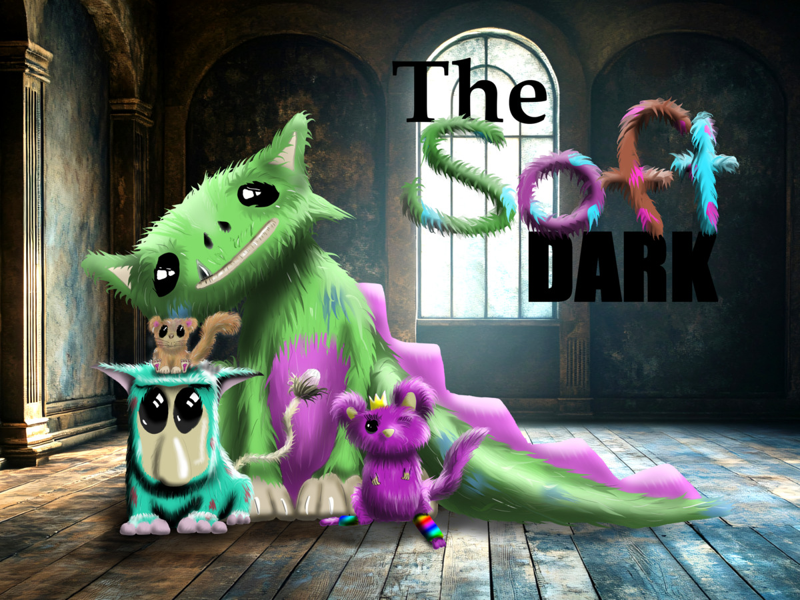
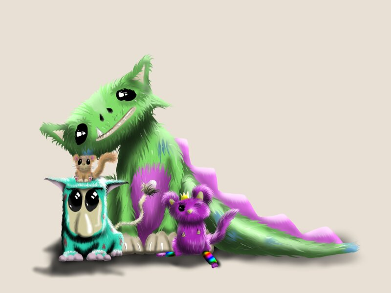
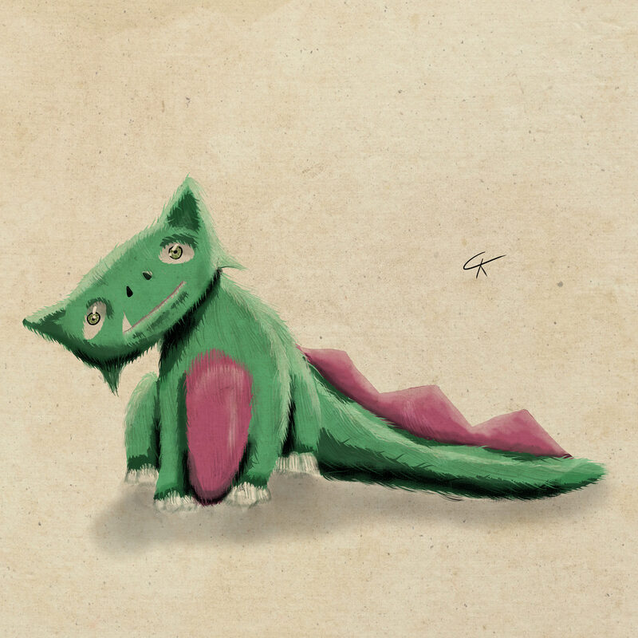

The Soft Dark
The Soft Dark is a place that's soft... and dark. It's home to a host of creatures that are ferociously timid. And soft, oh so soft.
Four creatures from the Soft Dark wake up in gardens and alleys across the globe. They have no memory of the shift. Four children find them. They must hide a tiger-sized, moss-green fluffball in the pantry before their parents walk in. The creatures feel a pull toward each other. The kids have to bridge the gap.



Status
Currently in development. The specimens are gathering.
Transparency Ratings
Rated per component using the C-AITS scale.
 Story / Text
Level 0 — The Soul
Story / Text
Level 0 — The Soul
 Illustrations
Level 3 — Synthesized
Illustrations
Level 3 — Synthesized